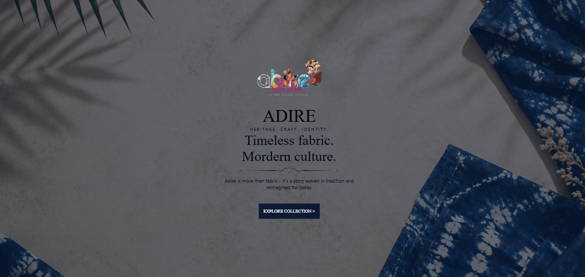
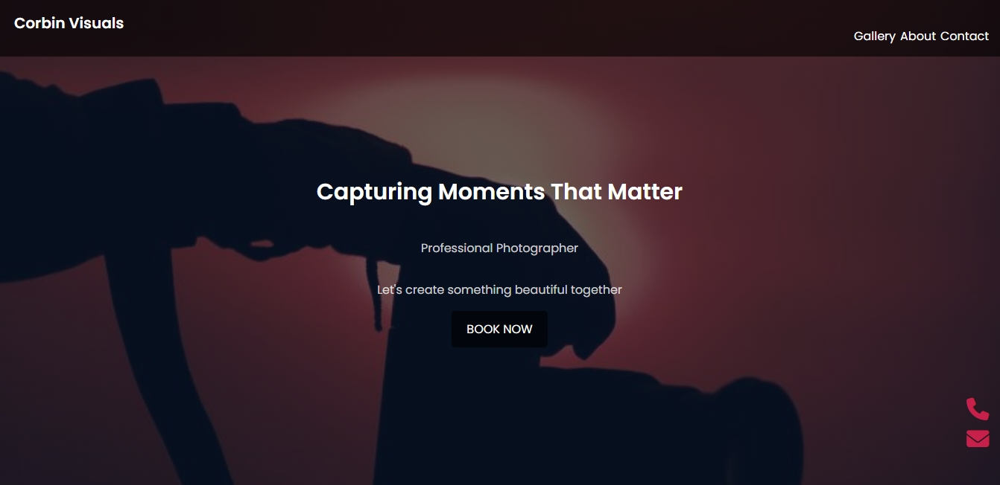
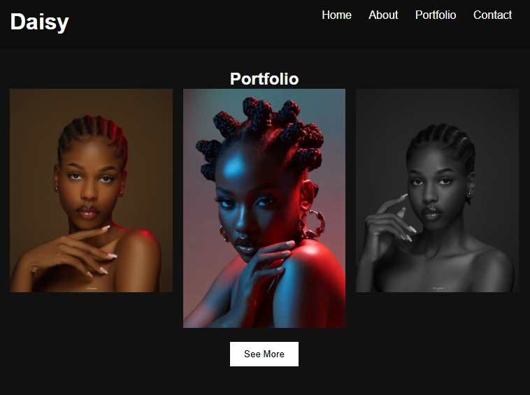

Website Design & Development
Modern landing pages, portfolios, and business websites built with HTML, CSS, JavaScript and responsive best practices.
Available for freelance and contract work
Hi, I am Oluwatobiloba Samuel Olaniyan, a full-stack website developer focused on clean interfaces, practical user experience, and reliable web solutions for businesses, creatives, and personal brands.

Live client-ready projects
Mobile-first layouts
Modern, easy-to-use pages
Websites built to convert
What I can do for you
Modern landing pages, portfolios, and business websites built with HTML, CSS, JavaScript and responsive best practices.
I improve existing websites so they feel smoother, load cleaner, and work beautifully across phone, tablet, and desktop screens.
Clear navigation, strong calls to action, polished visuals, and user journeys that make it easier for visitors to take action.
Selected work

A visual homepage for an Adire fashion brand with clear product presentation and smooth browsing.
View project
A clean showcase for a visual creative, designed to put work samples and booking intent first.
View project
A focused online profile for a model, with a stylish visual direction and easy client discovery.
View project
About me
My name is Oluwatobiloba Samuel Olaniyan. I combine frontend development, problem-solving, communication, and a strong learning mindset to create websites that feel professional and useful. I have experience with laboratory operations and data analysis too, which helps me work carefully, think clearly, and deliver reliable results.
How I work
I listen to your goal, audience, brand style, and the action you want visitors to take.
I create a clean layout, write responsive code, and shape the experience around real users.
I refine spacing, animation, mobile behavior, links, and content so the site feels client-ready.
Start a project
Send me a message and tell me what you want to build. I am ready to help turn it into a professional website.